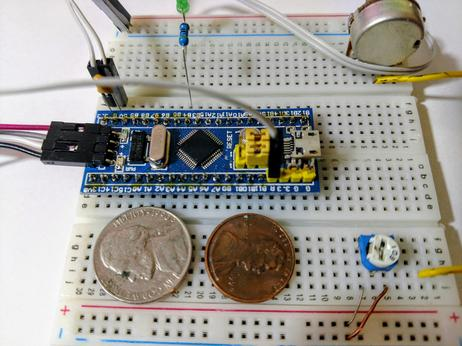
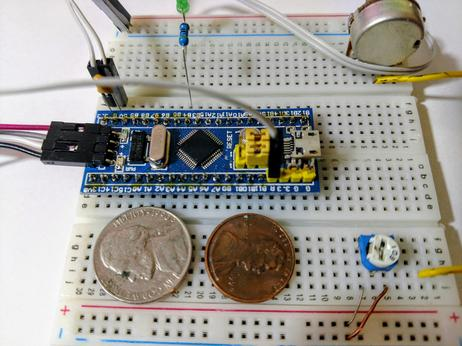

ARM Projects
Intro
Learning ARM baremetal development has been both a fun and a frustrating experience. I began seriously trying to develop for Cortex microcontrollers when I decided to start on a project to control a small camera platform over a cellular network with a full featured "SIM800L" GSM board. After a frustrating experience with my Oscilloscope project with the AVR328P, I realized that a more powerful versatile processor with more IO pins would probably be necessary here.
I began the following series of projects around the end of February 2018 to acclimate myself to the new chips.
▪ Hardware
The processor used in these projects is the ST Microelectronics STM32f103. I have 2 development boards that are referred to as "Minimum System Development Boards." This consists of the 48 pin processor soldered to a tiny circuit board featuring:
- 2 boot jumpers,
- 2 crystal oscillators,
- 40 header pins connecting to their respective pins on the processor (35 are GPIO)
- A Micro USB connector,
- 2 LED's (1 connected to GPIO, the other a power indicator)
- Both Serial Wire Debug and regular JTAG for flashing and debugging
 
